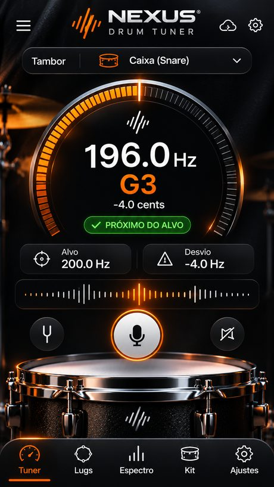
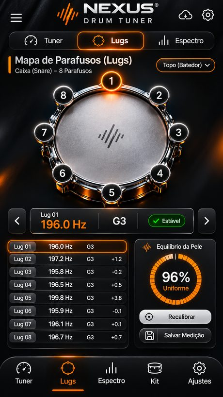
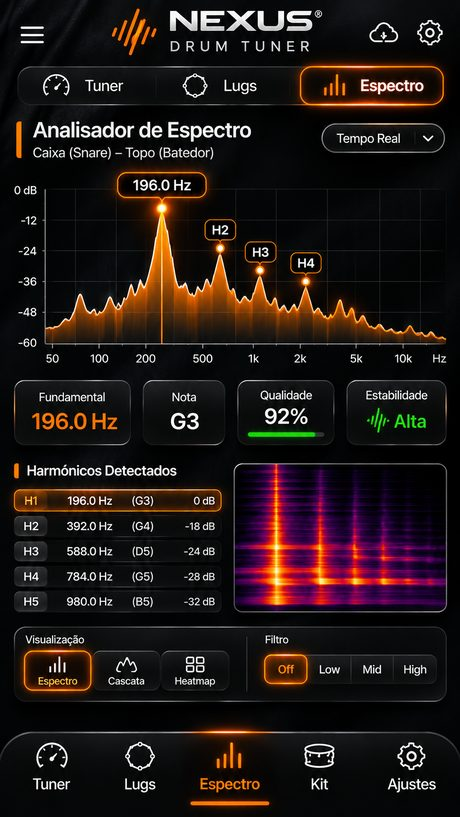
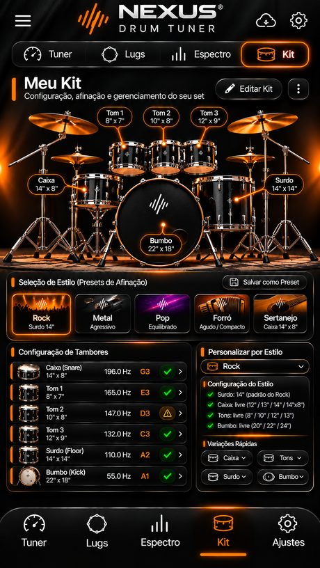
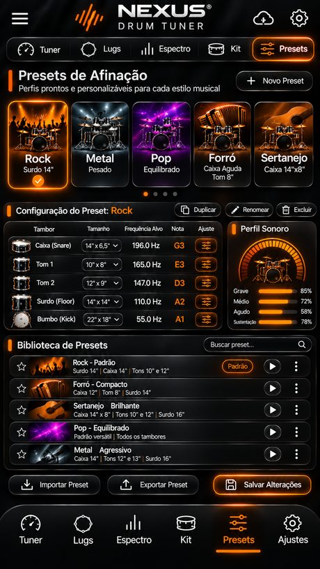
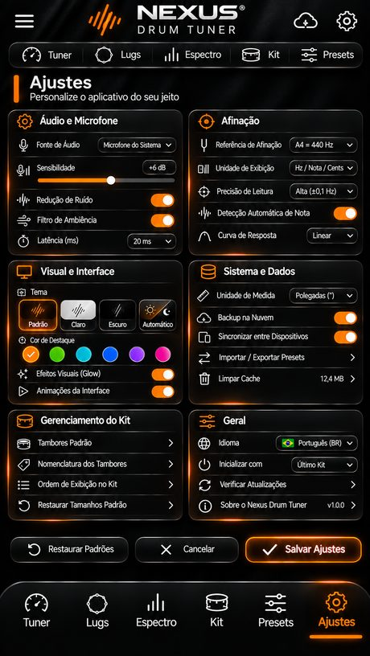

Afine sua bateria.
Ouça a diferença.
Afinador de bateria profissional: frequência em Hz, nota e cents, afinação parafuso por parafuso, analisador de espectro e presets para cada estilo.
App (APK) · v1.2 iPhone e navegador
Usar agora, sem instalar Ouvir demonstração
Afinada × desafinada

Afinação por frequência
Leitura em Hz, nota e cents, com frequência-alvo e desvio para cada tambor.
Mapa de parafusos
Meça cada parafuso pelo microfone e deixe a pele equalizada, com Antes & Depois.
Analisador de espectro
Fundamental, harmônicos H1–H5, espectrograma, cascata e filtros Low, Mid e High.
Kit e presets
Rock, Metal, Pop, Forró e Sertanejo como ponto de partida. Tudo editável, peça por peça.
Ouça a diferença
Compare o som de cada tambor afinado e desafinado. Use fone de ouvido para perceber melhor.
Caixa 14" · alvo 196 Hz (G3)
Tom 12" · alvo 147 Hz (D3)
Surdo 16" · alvo 110 Hz (A2)
Bumbo 22" · alvo 55 Hz (A1)
Na versão desafinada, os parafusos estão com tensões diferentes: a pele vibra em duas frequências muito próximas e o som “ondula” (batimento), perde sustentação e fica abaixo da nota. Na afinada, todos os parafusos estão iguais e o tambor soa limpo e estável. É exatamente isso que o Nexus Drum Tuner mede para você.
Áudios de demonstração gerados digitalmente pela Nexus Works Digital para comparação.
Um laboratório completo para bateristas
Seis áreas, um só aplicativo.





Como funciona
Simples, rápido e direto ao ponto.
Escolha o tambor
Caixa, tons, surdo ou bumbo, com tamanho e frequência-alvo.
Bata na pele
A uns 3 cm da borda. O som é analisado no próprio aparelho e nunca é gravado.
Ajuste até ficar verde
Aperte ou afrouxe os parafusos até chegar no alvo e na pele equalizada.
Baixar
Instale uma vez: as próximas versões chegam pelo próprio app, no sino de notificações.
No iPhone, abra pelo Safari, permita o microfone e toque em Compartilhar › Adicionar à Tela de Início para virar um ícone. Se o Android pedir, permita “instalar apps desta fonte”. Versão atual: 1.2.